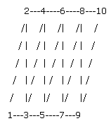

.NET Syntax
.NET Syntax
| Visual Basic (Declaration) | |
|---|---|
Function GetTessTriStripEdges() As System.Object | |
| Visual Basic (Usage) |  Copy Code Copy Code |
|---|---|
Dim instance As IFace2 Dim value As System.Object value = instance.GetTessTriStripEdges() | |
| C# | |
|---|---|
System.object GetTessTriStripEdges() | |
| C++/CLI | |
|---|---|
System.Object^ GetTessTriStripEdges(); | |
Return Value
Array that contains the list of edge IDs for this face (see Remarks)Visual Basic for Applications (VBA) Syntax
Remarks
Returns an array of long or integers (see Long vs. Integer) values that indicate which edges of the given triangle strip represent a face boundary. The array takes the form of:
[nStrips,
stripEdgeCount1, stripEdgeCount2,..., stripVertCountN,
strip1[triStripFlag, stripEdgeCount1 elements],
strip2[triStripFlag, stripEdgeCount2 elements],...,
stripN[triStripFlag, stripEdgeCountN elements&cd;
where:
nStrips = The number of triangle strips on the face.
stripEdgeCountN = The number of triangle edges for the Nth triangle strip + 1.
stripN = A sub-array that consists of the triStripFlag and an array of stripEdgeCountN edgeIds.
triStripFlag = Indicates if the triangle strip is a strip (=1) or if the triangle strip is a triangle (=0).
edgeId = An identifier with an arbitrary value that represents the edge of the face. Each edge has a unique edgeId.
|
 |
If you have this triangle strip, then you get a stripVertexCount of 10 using IFace2::GetTessTriStrips or IFace2::IGetTessTriStrips. IFace2::GetTessTriStripEdges and IFace2::IGetTessTriStripEdges get a stripEdgeCount of 18. This means that for each triangle strip stripEdgeCount - 1 = 2(stripVertexCount - 2) + 1. The first element represents a flag indicating if the current strip is a triangle strip or a simple triangle, 1 or 0, respectively.
If one of the triangle strip edges lies on a face edge, then the value of stripN[i] = edgeId. If the triangle strip edge does not lie on a face edge, then the value of stripN[i] = 0. |
See Also
IFace2 Members
IFace2::GetTessNorms Method
IFace2::GetTessTextures Method
IFace2::GetTessTriangleCount Method
IFace2::GetTessTriangles Method
IFace2::GetTessTriStripNorms Method
IFace2::GetTessTriStrips Method
IFace2::GetTessTriStripSize Method
IFace2::IGetTessNorms Method
IFace2::IGetTessTextures Method
IFace2::IGetTessTriangles Method
IFace2::IGetTessTriStripEdges Method
IFace2::IGetTessTriStripEdgeSize Method
IFace2::IGetTessTriStripNorms Method
IFace2::IGetTessTriStrips Method